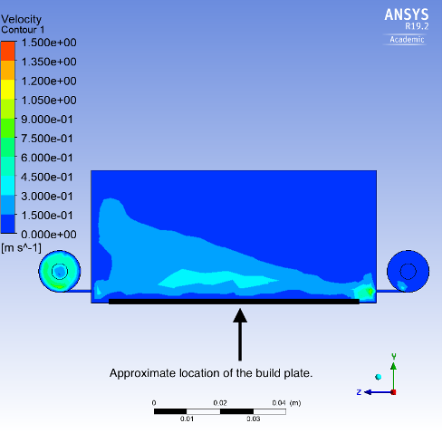
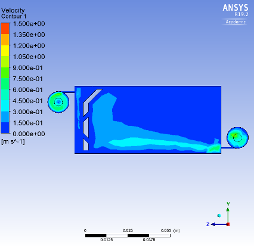

Hi, my name is Alex and this is my portfolio. I’m a 2020 Queen’s University graduate with a Bachelor of Applied Science in Physics, specialized in computing. I am aspiring to join a team where I can apply my passions and lend my experience in software engineering, aerospace engineering, and robotics.
Through work and personal projects I regularly apply my skills as a software engineer. I become heavily invested in the projects I work on and get satisfaction from seeing my projects and ideas implemented. My goal is to ensure my end-user enjoys using what I’ve made as much as I enjoy making it.
I have a love of space exploration and the engineering involved with it. I have been a key member of teams that build amateur satellites and rovers and I hope to one day be a key member of the teams that push humanity to go beyond Earth. To do so I am pushing myself to hone my skills in software engineering through projects and well-chosen work opportunities.
I have developed a recent interest in neural networks and machine learning, particularly in robotics applications. I have decided to independently advance my education of AI systems through research and personal projects. I hope to gain experience in this area with work opportunities and mentors in the software engineering community.
Projects
The following is a list of projects I've developed with details regarding what went into them. Most projects were done independently and anything not made entirely by me will be marked as such.
Robotic Arm Control
This project was designed for the Queen’s Space Engineering Team (QSET) during my undergrad. QSET took part in the University Rover Challenge where a number of undergraduate design teams competed with mock Mars rovers to complete tasks such as equipment servicing, astronaut assistance, and autonomous traversal. These tasks required precise teleoperated control of the rover and it’s manipulator. This project covers the control algorithms for the rover’s manipulator. The algorithms are written in C++ and implemented in the Robot Operating System (ROS). Below is an image of the robotic arm these algorithms were written for.
The arm control system was divided into three separate programs; joint control, angle control, and position control.
Joint control allows the user to select a single joint motor and applies a voltage proportional to the user’s joystick input. This system was used as a fallback incase of encoder failure as it is the only system that does not require encoders to operate. In the short video below notice how only a single joint motor is being driven when using joint control. This is not a desirable primary control scheme because operating a robotic arm one joint at a time is tedious and unintuitive as almost all motion occurs in arcs.
Angle control employs a set of PID controllers to set a single joint to a desired angle. This system requires the use of position encoders to determine the current angle of the given joint so that an error term can be fed back into the PID controller. This control scheme is a precursor to position control.
Position Control employs inverse kinematics to allow the arm’s end-effector to track in the x-y plane instead of in arcs. This is achieved by first calculating the end-effector’s position in x-y and then applying offset proportional to the user’s joystick input. This newly offset coordinate is then used as the desired position of the end-effector and inverse kinematic trigonometry calculates the desired angles of each arm joint in order to achieve the desired x-y coordinate. These desired angles are then fed into the angle control system which drives the motors. Below is a short video of position control in action. Notice how the ‘shoulder’ and ‘elbow’ of the robotic arm work in tandem to achieve linear motion of the end-effector.
This project was designed for QSET’s mock mars rover during my undergrad. See the Robotic Arm Control project for details about QSET. This project was written in C++ using ROS.
The control system for this project was designed with two separate control schemes. The first scheme, voltage control, is a simple fallback system which applies a voltage proportional to the user’s joystick input. In order to turn, the two sides of the rover are given differing voltages in order to ‘skid-steer’. This system is used as a fallback because it does not require any encoders to operate. However, this is not the preferred drive system because if no voltage is applied to the motors the rover will roll on hills as the holding torque of the inactive motors is very low. To counteract this, a PID controller is used where the user’s joystick position determines the velocity set point and velocity encoders on all wheels determine error terms for the PID controller. Using this system, when the joystick is at rest the wheels are held still, preventing rolling on hills. This control system can be seen in action in the video below.
This simulator was written to learn JavaScript and explore how gravitational laws result in the emergence of solar system structures. The simulator does not follow SI units but instead mass and distance are scaled to allow planets/asteroid bodies to orbit within the user’s viewport.
The simulator employs leapfrog integration to solve the differential equations that govern the bodies’ motion. Leapfrog integration updates bodies in a ‘kick and drift’ style where the position, velocity, and acceleration of a body are updated at staggered steps. This method is stable for oscillating systems. For more information, Wikipedia offers a relatively good introduction to this algorithm en.wikipedia.org/wiki/Leapfrog_integration.
When adding bodies to the simulation, velocity can be added by clicking and holding the mouse and pulling back like a slingshot. The predicted path the body will take is then computed by stepping the simulation forward briefly. This can be seen in the following video.
For collisions, this simulator enforces conservation of linear momentum with completely inelastic collisions. As such when two bodies collide their mass is combined to form one body and the resulting body’s radius is adjusted based on the predetermined constant density for all bodies in the simulator. Finally, the velocity of the resulting body is adjusted to ensure momentum is conserved. The following video shows this behavior.
A few pre-set options are implemented to observe solar system structure emergence. These include random asteroid belts, and asteroid scatterings which are shown in the next two videos.
This project is not a software engineering project. It is instead a mechanical engineering project focused on fluid dynamics performed for my undergraduate thesis. I chose this project out of a desire to learn more about metal additive (MA) 3d printing and I think it is interesting enough to briefly discuss here, despite not being software related. This project description will only focus on a couple topics from my thesis.
This project is concerned with the redesign of the gas flow system in a MA printer. This gas flow serves the purpose of removing fumes and ejected particles from the point where metal is being melted by the printer’s laser. Ejected metal particles should be swept out of the built chamber and should not be allowed to redeposit on the build surface. As such, laminar flow is very desirable. This is because turbulent flow runs the risk of picking up additional metal particles from the build surface and will not consistently bring entrained particles to the outlet. Below is a screenshot from an ANSYS simulation showing the original gas flow from when I started this project. The gas inlet is on the right and the outlet is on the left.

Notice the inconsistencies in velocity through the fluid. This non uniform flow fluctuates and moves about as the simulation runs, suggesting very turbulent flow. After a number of design iterations an improved chamber was designed, mimicking the behavior of a fume hood. That is, baffles were added to force the gas to cycle through the chamber, placing a downward pressure of the gas that is entering from the inlet nozzle on the right as seen in the image below.

Metal particles would be allowed to enter in through the baffles at the bottom but would be unable to exit at the top, forcing them through the outlet at the top left. Importantly the flow of gas over the print area is a very consistent laminar flow and does not dip to pick up extra metal particles.
Balancing a Cube with a Reaction Wheel
This project was performed for my capstone during my undergrad and was done in conjunction with a few other software engineers. The goal of this project was to build a cube like a cube satellite that could balance on an edge similar to the cubli seen here: youtube.com/watch?v=n_6p-1J551Y. While the cubli employed non-linear controllers to stay balanced, we first attempted using a neural network control policy and a then PID controller. These controllers were run on an Arduino which sent signals to a motor controller, driving a brushless motor. The neural network was able to learn a stable control policy in simulation but the physics model running in simulation was not close enough to the real life system and as such it failed to control the cube effectively. The PID controller worked relatively well but would balance about a point slightly off from center causing the reaction wheel to constantly impart more angular momentum to keep the cube still. In this scenario the motor eventually saturates and the cube falls. This behavior can be seen below in two separate test rigs. The inaccurate balancing point is likely due to noise and imprecisions in the inertial measurement unit (IMU). As such a secondary IMU and/or a Kalman filter may have helped this problem.
Unfortunately, this is as far as this project went due to time constraints. This was however a very good learning opportunity about scope control under project deadlines. In hindsight, we should have focused our efforts on a single control scheme and while neural networks are very interesting it would have been better to focus on control methods founded in the domain of control theory. This would have likely resulted in faster progress as this inverted pendulum style problem has been well analyzed in control theory already.
Drone Flight Computer (Active Project)
The goal of this project is to learn more about control theory and optimal controllers (likely not PID controllers). While there isn’t much to show for this project as of yet I still feel it would be interesting to touch on what I have done so far and what I plan to do for this project.
As of now I’ve written a small front end webpage and a node.js server to read input from an Xbox controller in order to control a single motor. This is done by reading input from the controller into the webpage and creating a post request which transfers the controller input data to the node server. The server then sends serial commands to an Arduino which drives a PWM signal, controlling a motor controller. Next, I will need to connect multiple motors and motor controllers, and 3D print a frame for the drone.
In the future, the Arduino will be connected to a radio transceiver which will broadcast messages to the flight computer on the drone. The flight computer will likely be an STM32F series microcontroller because I have some experience with these MCUs. I will likely broadcast mostly unprocessed controller input to the flight computer and allow it to perform most processing and control decisions. I will first attempt to perform little control on the flight computer to allow the user to make decisions on how to keep the drone flying level and stable. This is similar to how racing drones operate. However, this relies on all motors being driven exactly the same by all motor controllers which may not prove to be true. If this does not work a more complex control method may be needed with some form of motor or orientation feedback. Following this I hope to write a controller which will perform dynamic balancing and station keeping similar to most commercial drones. As mentioned earlier I hope to do this with an optimal controller that is not a PID controller as I feel the need to broaden my controls knowledge.